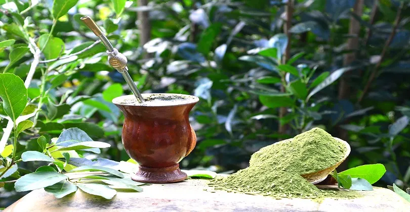
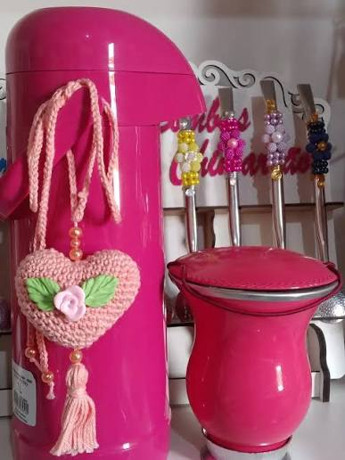
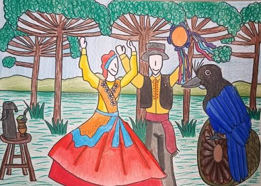

artes inspiradas no mate
A cultura do mate, tão enraizada na identidade e no cotidiano do sul da América do Sul, serve como uma fonte inesgotável de inspiração para as artes visuais, onde a tradição se funde com a expressão poética. Nas telas e esculturas, o ritual da roda de chimarrão e da yerba mate deixa de ser apenas um hábito diário para se tornar um símbolo vivo de hospitalidade, conexão comunitária e resistência cultural. Artistas retratam desde a textura orgânica das cuias trabalhadas e a prata reluzente das bombas até o vapor suave que se eleva da água quente, capturando a atmosfera acolhedora e a memória afetiva de um povo que encontra na simplicidade desse encontro a sua verdadeira essência.

artesanato relacionado ao chimarrão
O artesanato ligado ao chimarrão é uma verdadeira celebração da identidade cultural sul-americana, unindo a habilidade manual à tradição do mate. Nas mãos de artesãos habilidosos, materiais como a porongas naturais transformam-se em cuias esculpidas à mão, frequentemente adornadas com detalhes em alpaca, prata ou couro costurado com precisão. As bombas de chimarrão também ganham destaque como peças de ourivesaria, enquanto bolsas, térmicas e cuias ganham revestimentos exclusivos que contam histórias locais, tornando cada utensílio não apenas um objeto de uso diário, mas uma autêntica obra de arte funcional.

pinturas, musicas e esculturas sobre costumes paranaenses
As artes visuais e a música no Paraná expressam com riqueza e orgulho a essência de suas tradições, retratando a vida do interior, a herança tropeira e a beleza marcante da paisagem dominada pelas araucárias. Na pintura, artistas emblemáticos capturaram o cotidiano dos campos, as colheitas e o hábito do chimarrão sob a luz singular do estado; na escultura, monumentos em bronze e pedra imortalizam a figura do pioneiro, do caboclo e a força do trabalho local, dando forma física às memórias regionais; e na música, os acordes das violas do interior e o ritmo vibrante do fandango caiçara embalam histórias e causos do povo paranaense. Juntas, essas linguagens transformam os costumes e a identidade do Paraná em um patrimônio cultural vivo e apaixonante.

curisidades
é uma planta nativa da América do Sul rica
curiosidades 2
Nome "Erva": Os espanhóis chamavam a planta de "erva" porque viam os indígenas usarem as folhas trituradas e achavam que era um arbusto pequeno, sem saber que era uma árvore alta.
TÍTULO DA SEÇÃO
TEXTO EXPLICATIVO DA SEÇÃO